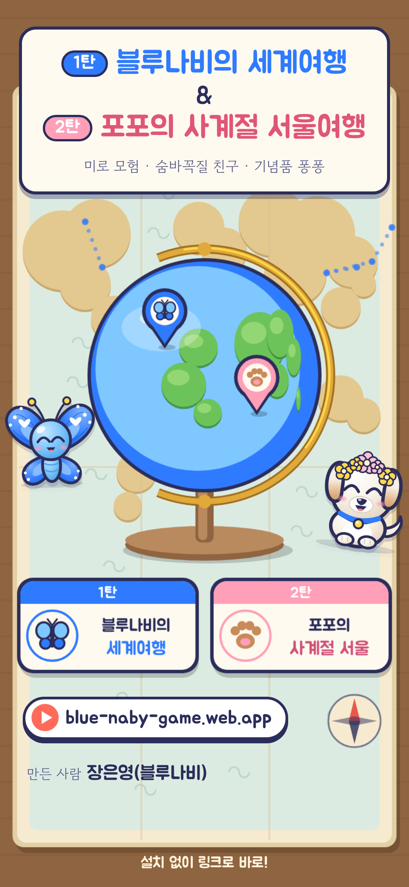

발표 스크립트
약 50초
1탄
블루나비의 세계여행 &
2탄
포포의 사계절 서울여행
발표 장은영(블루나비) · 한글 약 230자 · 1초에 4~5자, 또박또박
파란 띠는 화면, 나머지는 소리 내어 읽는 말
인사
한마디
1탄
2탄
놀아요
마무리
1 인사
0:00 – 0:07
화면 · 세로 썸네일
안녕하세요, 블루나비 장은영입니다. 제가 만든 게임 「블루나비의 세계여행」을 소개할게요.
2 한마디로
0:07 – 0:15
설치도 가입도 없이, 링크 하나로 폰에서 바로 하는 귀여운 미로 모험이에요. 게임오버도 없어요.
3 1탄
0:15 – 0:24
화면 · 지구본의 나비 핀
1탄에서는 파란 애벌레 블루나비가 한국에서 캐나다까지 다섯 나라를 여행하며 나방, 그리고 나비로 자라요.
4 2탄
0:24 – 0:32
화면 · 발바닥 핀
2탄 「포포의 사계절 서울여행」에서는 아기 강아지 포포가 봄, 여름, 가을, 겨울의 서울을 누벼요.
5 이렇게 놀아요
0:32 – 0:43
화면 · 미로
미로에 숨은 친구를 세 번 찾으면 출구에서 친구가 되고, 모든 대사는 목소리로 들려줘요. 기념품 퐁퐁으로 친구와 겨룰 수도 있어요.
6 마무리
0:43 – 0:50
화면 · QR
지금 QR을 찍으면 바로 시작해요. 함께 여행 떠나요! 감사합니다.
blue-naby-game.web.app
설치 없이 링크로 바로 · 폰 카메라로 QR을 찍어도 돼요